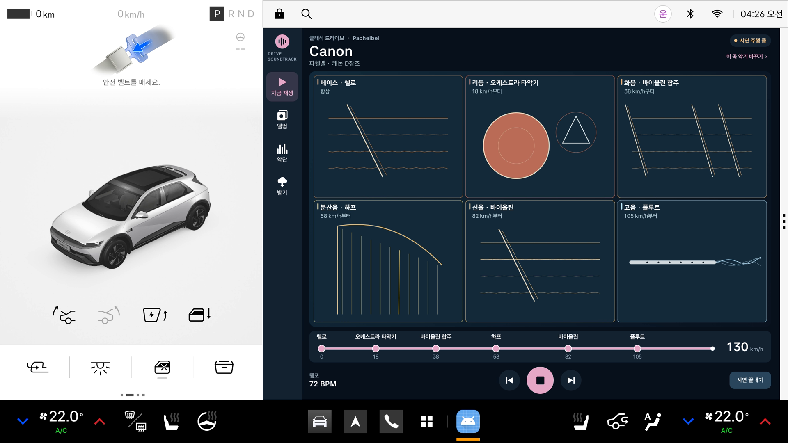

Any powertrain · Adaptive music
어떤 차든,
주행이 곧 연주가 됩니다.
Drive Soundtrack은 차량 움직임으로 오케스트라를 지휘합니다. 속도가 오르면 첼로 베이스 위에 타악기·현악·하프·바이올린·플루트가 하나씩 합류하고, 감속하면 다시 차분한 소리로 돌아옵니다. 「캐논」부터 「산왕의 궁전에서」까지 클래식 명곡을 실제 악기 소리로, 내가 꾸린 악단으로 연주합니다. 모든 차가 가진 신호만 쓰므로 내연기관·전기차 어디서나 동작합니다.
One drive · Six stages · My band
- 01 베이스 · 첼로
- 02 리듬 · 오케스트라 타악기
- 03 화음 · 바이올린 합주
- 04 분산음 · 하프
- 05 선율 · 바이올린
- 06 고음 · 플루트
D gear · Real vehicle speed signal
차가 달리면, 악기가 하나씩 합류합니다
Pleos Virtual Console의 가속·브레이크 페달로 같은 속도 곡선을 주행했습니다. 앱은 시나리오 없이 차량 속도 신호를 받아 악기를 더하고 뺍니다.
왼쪽은 Pleos 화면(계기판 속도와 앱), 오른쪽은 Virtual Console입니다. 소리는 같은 재생 중 앱이 AudioTrack에 전달한 PCM입니다. 에뮬레이터가 오디오를 실시간보다 느리게 만들어 화면을 소리에 맞췄기 때문에 화면이 실제보다 약 1.6배 빠르게 흐릅니다. 실제 도로 주행은 아닙니다.
The arrangement
속도가 악기를 더합니다
여섯 단계는 마디 시작에서 자연스럽게 들어오고 감속하면 반대 순서로 빠집니다. 화면의 속도 사다리가 어느 속도에서 어떤 악기가 들어오는지 보여 줍니다.
베이스
곡의 바탕. 첼로·콘트라베이스·바순·피아노·오르간 등.
리듬
주행이 시작되면 박동을 더합니다. 오케스트라·라틴 타악기, 팀파니 등.
화음
곡의 화음을 채웁니다. 바이올린·비올라 합주, 호른, 오르간 등.
분산음
화음을 한 음씩 풀어 연주합니다. 하프·마림바·실로폰·피아노 등.
선율
곡의 주선율. 바이올린·플루트·클라리넷·오보에·트럼펫 등.
고음 · 대선율
선율을 한 옥타브 위에서, 「캐논」에선 돌림노래로. 글로켄슈필·플루트 등.
Classics · Real instruments · My band
클래식 명곡을, 내가 꾸린 악단으로
저작권이 끝난 원곡을 악보로 직접 입력해 실시간 연주합니다. 악기는 실제 오케스트라 녹음(VSCO 2 Community Edition, 퍼블릭 도메인)을 씁니다.
클래식 드라이브 앨범
파헬벨 「캐논」, 바흐 「평균율 전주곡」, 사티 「짐노페디」, 베토벤 「환희의 송가」, 그리그 「산왕의 궁전에서」. 「산왕의 궁전에서」는 속도가 오를수록 템포도 빨라집니다.
실제 악기 소리
첼로·바이올린·플루트·하프·피아노·호른 등 실제 악기 녹음과 오케스트라·라틴 타악기, 신시사이저까지 단계마다 고릅니다.
나만의 악단
여섯 단계의 악기를 고르면 모든 클래식 곡이 그 악단으로 연주됩니다. 곡마다 따로 편성하거나, 실내악·오케스트라 같은 빠른 편성을 한 번에 고릅니다.
고르면서 바로 듣기
악기를 고르는 단계는 정차 중에도 바로 들려줍니다. 주행 화면에는 악기마다 다른 그림과 색으로 나타납니다.
끊기지 않는 앨범
오리지널·클래식 드라이브·내 앨범의 곡이 약 3분마다 박자에 맞춰 이어집니다. 핸들 버튼으로 이전·다음 곡.
오리지널 곡 3개
Pulse(일렉트로), Coast(밝은 크루즈), Neon(차분한 나이트 일렉트로)도 함께 들어 있습니다.
Beyond speed · Steering
핸들을 꺾으면 소리도 따라 기웁니다
D단 60 km/h를 유지한 채 핸들 각도만 바꿨습니다. 커브에서는 현악이 부풀어 오르고, 소리 전체가 꺾는 쪽 스피커로 기웁니다. 직선으로 돌아오면 가운데로 돌아옵니다.
Pleos Virtual Console로 핸들 각도를 넣고, 앱은 Pleos SDK의 조향각을 받아 연주합니다. 아래쪽 막대는 왼쪽(L)·오른쪽(R) 스피커의 음량입니다. 스테레오 스피커나 헤드폰으로 들어 보세요. 실제 도로 주행은 아닙니다.
연주에 쓰는 신호
속도는 악기 수와 음색을, 가속과 제동은 소리의 강약을 바꿉니다. 핸들은 현악과 좌우 기울기로, 방향지시등은 서로 다른 두 음의 응답으로 연결됩니다. 와이퍼도 리듬 질감에 영향을 줍니다.
네 앨범
오리지널은 Pulse·Coast·Neon, 클래식 드라이브는 다섯 명곡, 내 앨범은 직접 담은 곡, 받은 곡은 클라우드에서 내려받은 악보입니다. 클래식 곡과 받은 곡은 나만의 악단으로 연주됩니다. 이 영상은 오리지널 곡 Pulse입니다.
In-app demo · About 100 seconds
정차 중에 미리 들어 보는 시연 주행
앱의 시연 버튼으로 0→30→50→70→95→130→0 km/h를 재생합니다. 아래 버튼으로 속도 구간을 바로 들어 볼 수 있습니다.
Pleos Connect 전체 화면을 녹화한 뒤 오른쪽 앱 영역만 잘랐습니다. 원본의 왼쪽 3D 차량은 정차·P 상태입니다. 소리는 같은 재생 중 앱이 AudioTrack에 전달한 PCM이며, 속도는 앱 내부 시연 입력입니다. 실제 도로 주행은 아닙니다.
Pleos 전체 화면 원본 보기

한 화면을 녹화한 뒤 오른쪽 앱 부분을 잘라 본편에 사용했습니다. 왼쪽 차량 표시는 앱 내부 시연 속도와 연동되지 않습니다.
Cloud · Scores and instruments
밖에서 만든 악보와 악기를, 차에서는 받아서 연주합니다
악보와 악기는 차 밖의 웹 제작 플랫폼에서 만들어 클라우드에 올립니다. 차 앱은 정차 중 ‘받기’ 탭에서 내려받기만 하고, 받은 악보는 앨범의 ‘받은 곡’에, 받은 악기는 악단에 들어갑니다.
이 영상은 에뮬레이터 녹화가 아닙니다. 화면은 앱의 Compose UI를 JVM(Robolectric)에서 그린 것이고, 소리는 같은 속도 곡선으로 앱 오디오 엔진이 만든 실제 출력입니다. 앞부분(받기·앨범·악단)은 소리가 없습니다. 예시 클라우드는 이 페이지와 같은 GitHub Pages의 cloud/catalog.json입니다: 드보르자크 「라르고」 악보, VSCO 2 CE 녹음을 올려 만든 트롬본, 음색을 디자인한 핸드팬.
Roadmap
주행이 곡을 고르고, 함께 만드는 음악으로
차에서 받아 쓰는 쪽은 준비됐습니다. 다음은 주행이 음악을 더 깊이 지휘하고, 누구나 악보와 악기를 만들어 나누는 제작 플랫폼입니다.
주행이 곡을 고르고 이끕니다
고속도로·도심·야간 같은 상황에 맞는 곡을 자동으로 고르고, 가속·정체의 흐름이 곡의 절정과 잦아듦을 이끕니다.
악보·악기를 웹에서 만들고 공유
음표를 찍거나 MIDI를 가져와 악보를 쓰고, 녹음을 올리거나 음색을 디자인해 악기를 만들어 계정으로 공유합니다. 본인 창작물과 저작권이 끝난 곡만 받습니다.
무료 + 곡·악기 팩
기본 곡과 악기는 무료, 프리미엄 곡·악기 팩과 시즌·브랜드 협업, 작곡가·악기 제작자 수익 배분. 제작과 업로드는 웹에서만, 차에서는 정차 중 내려받기만 합니다.
Try the app
차 안의 움직임을 음악으로
Android Automotive용 Kotlin 앱입니다. 저장소에서 구현과 검증 자료를 확인할 수 있습니다.